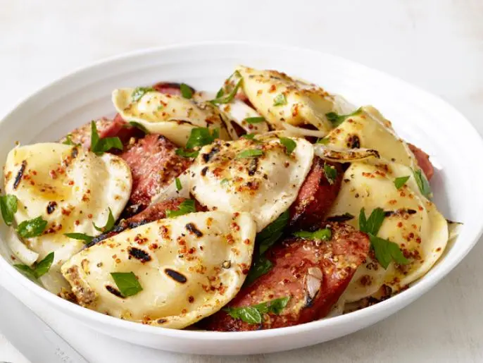

Grilled Pierogies and Kielbasa

A hearty and delicious meal
Ingredients
- 1 pound kielbasa (pork or turkey), cut into 4 pieces
- 2 tablespoons whole-grain mustard
- 2 tablespoons apple cider vinegar
- 1/4 cup extra-virgin olive oil
- 1 large white onion, cut into 6 wedges
- 1 pound frozen potato-and-cheddar pierogies (do not thaw)
- Kosher salt and freshly ground pepper
- 1/4 cup roughly chopped fresh parsley
Preparation Steps
- Preheat a grill to medium. Grill the kielbasa, turning,
until marked, 8 to 10 minutes. Transfer to a baking sheet
or platter.
- Meanwhile, whisk the mustard and vinegar in a large bowl.
Slowly whisk in 2 tablespoons olive oil until smooth.
- Toss the onion and pierogies with the remaining 2 tablespoons
olive oil and season with salt and pepper. Grill, covered, until
the pierogies thaw and the onion begins to soften, about 5 minutes.
Turn the pierogies and onion and continue to grill, covered, until
the pierogies are cooked through and the onion is tender, 4 to 6 more
minutes. Transfer to the baking sheet or platter.
- Slice the kielbasa into pieces and add to the bowl with the mustard
dressing. Roughly chop the onion and add to the bowl along with the
pierogies and parsley. Season with salt and pepper and toss. Divide among
shallow bowls.